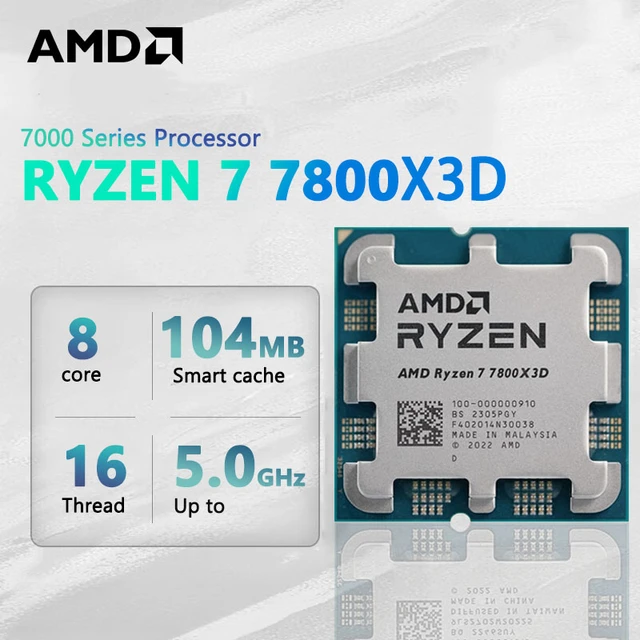
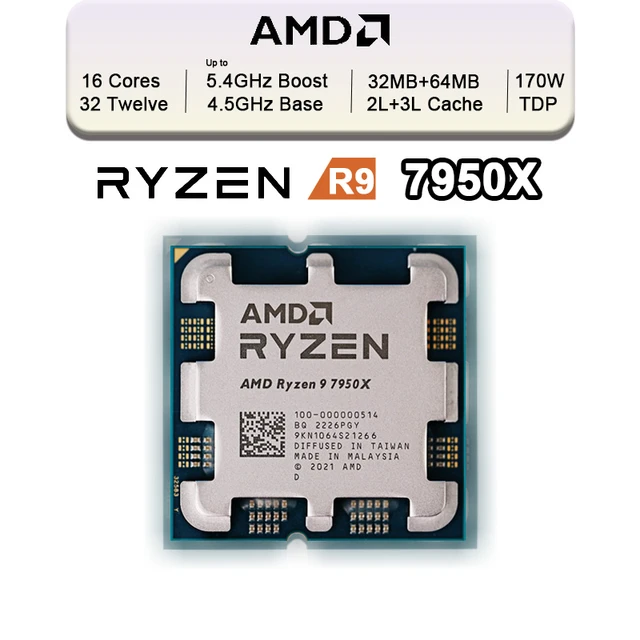
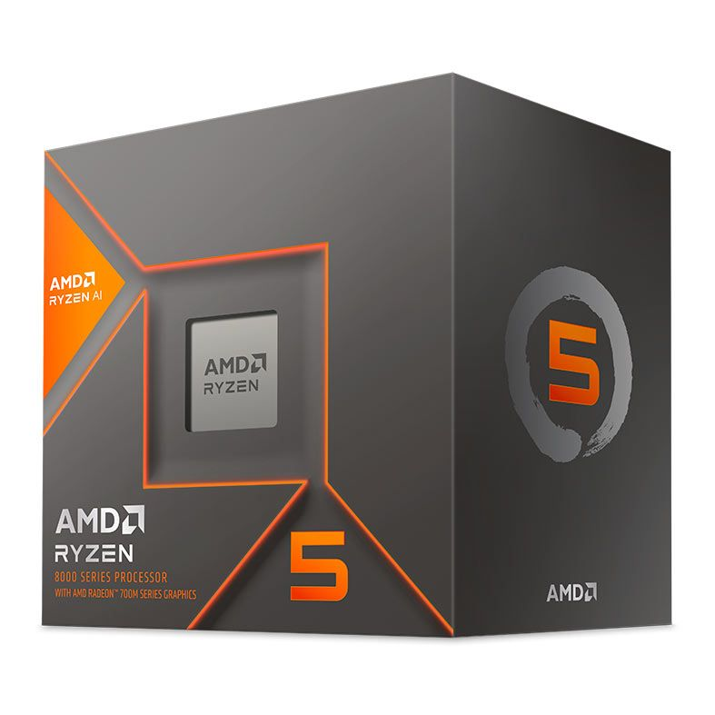
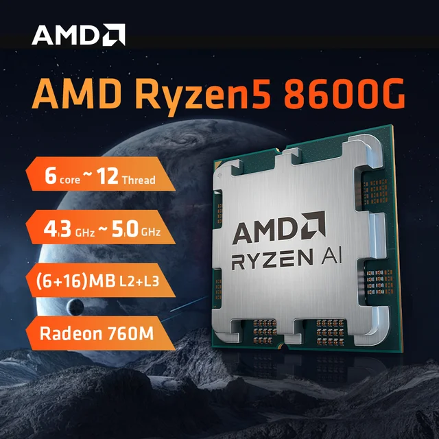
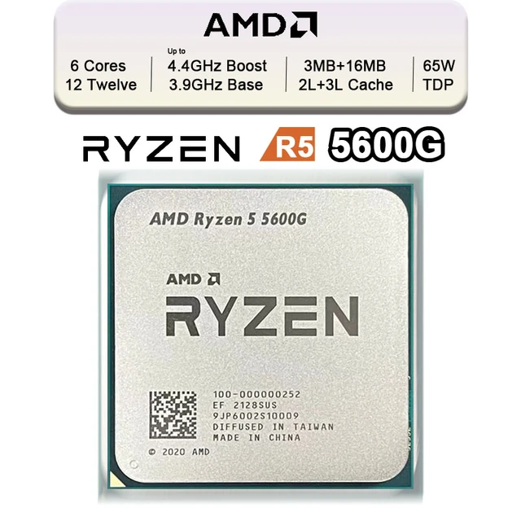

Conheça os processadores com o maior potencial de longividade do mercado.
Se você for um competidor de FPS ousado, você precisa de um processador com a maior performace por core possível, que cospe as maiores taxas de quadro por segundo. Atualmente, o CPU com o maior IPC do mercado que tenha a plataforma com a maior longividade para upgrades, atualmente o AM5, é o RYZEN 7 7800X3D

ESPECIFICAÇÕES:
Se você usa o PC para trabalho, como renderização 3d , edição de vídeo e machine learning, e quer investir BASTANTE para MAXIMIZAR sua PRODUTIVIDADE, o RYZEN 9 7950x tem uma das maiores performaces em multitasking do mercado. Sua vantagem em relação ao CORE i9 14900k é que sua plataforma , o AM5, tem muitos anos para upgrades, emquando a do CORE i9, o LGA1700, sairá de linha já em 2024.

ESPECIFICAÇÕES:
Se você tem um orçamento MAIS APERTADO, deve levar enm consideração que, ultimamente, a peça que mais encarece os PCs é a placa de vídeo. Considerando isso, a AMD fez um CPU que tem um gráfico integrado, já imbutido no processador, uma espécie de "shampoo 2 em 1". O Ryzen 5 8600g é a APU com o gráfico integrado mais forte do mercado, que consegue bater de frente com várias placas de video dedicadas, como a GTX1650 e a RX6400. Essa APU támbém faz o uso da plataforma AM5.
ESPECIFICAÇÕES:
Se você tem um orçamento AIDA MAIS APERTADO, o RYZEN 5 5600G é uma APU que já foi lançada ha alguns anos na plataforma AM4, a qual envelheceu MUITO BEM, barateando BASTANTE ao longo dos anos e tornando essa APU um GRANDE CUSTO BENEFÍCIO. Apesar de não ter uma longividade tão esticada quanto as demais CPUs, ela oferece um preço BEM MAIS BAIXO e com muitas e boas opções para upgrades.

ESPECIFICAÇÕES:
